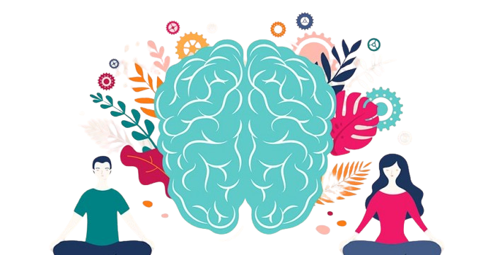
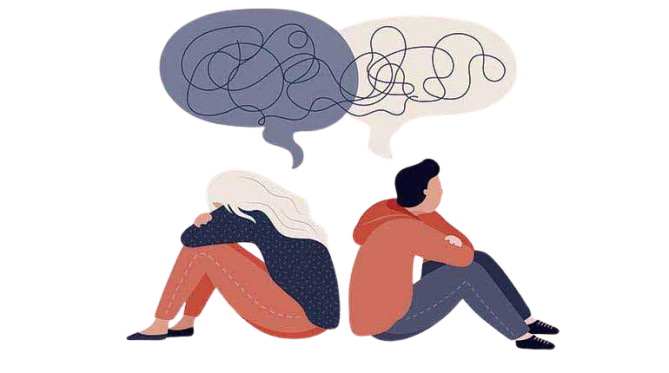

Salud Mental
La salud mental es un aspecto fundamental del bienestar general de las personas. Se refiere a cómo pensamos, sentimos y nos comportamos en nuestra vida diaria. También influye en cómo manejamos el estrés, nos relacionamos con los demás y tomamos decisiones.

Componentes de la salud Mental
- Emocional: Implica la capacidad de gestionar las emociones y enfrentar los desafíos de manera saludable.
- Psicológico: Se relaciona con cómo interpretamos el mundo y nuestras experiencias, así como nuestra autoimagen.
- Social: Se refiere a nuestras relaciones y conexiones con los demás, que son esenciales para nuestro bienestar.

Factores que afectan la salud mental:
- Genéticos: Algunas personas pueden estar predispuestas a ciertos trastornos mentales.
- Ambientales: El entorno familiar, social y laboral puede influir significativamente.
- Biológicos: Problemas de salud física o desequilibrios químicos en el cerebro pueden afectar la salud mental.
- Psicológicos: Experiencias traumáticas o estrés prolongado pueden tener un impacto negativo.
Estrategias para cuidar la salud mental:
- Relaciones sociales: Mantener conexiones positivas con amigos y familiares.
- Ejercicio: La actividad física regular puede mejorar el estado de ánimo.
- Alimentación: Una dieta equilibrada contribuye al bienestar mental.
- Profesionales de la salud: Buscar ayuda de psicólogos o psiquiatras cuando sea necesario.

Es importante destigmatizar los problemas de salud mental y reconocer que pedir ayuda es un signo de fortaleza. Si tienes más preguntas o necesitas información específica, ¡estaré encantado de ayudarte!